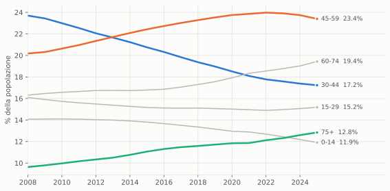
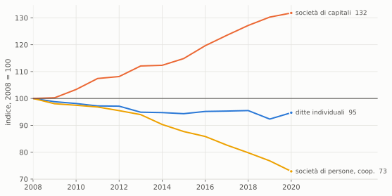
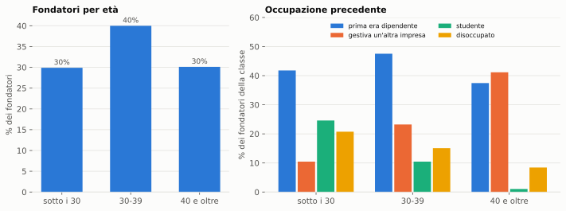
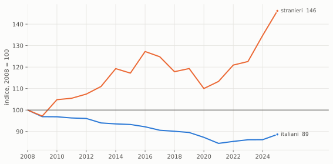

Figura 1: Quota delle coorti d’età sulla popolazione residente, Italia. Fonte: Eurostat [11].
Demografia, forma giuridica e ricambio generazionale: i dati alla vigilia degli 80 anni della CNA
Paolo Volterra ![]()
Italiano. Una stima recente della Commissione europea lega la natalità delle imprese al peso della popolazione fra 30 e 44 anni, che in Italia è sceso dal 23,7% del 2008 al 17,2% del 2025. I dati italiani mostrano però un quadro più articolato. La natalità di tutte le imprese non è diminuita, perché le nuove imprese sono in larga parte ditte individuali con un solo addetto; è diminuita invece la natalità delle imprese con dipendenti, dal 10,0% all’8,7% fra il 2008 e il 2019. Nel frattempo le società di capitali sono cresciute del 30% e occupano più della metà degli addetti. I fondatori si concentrano fra i 30 e i 39 anni, gli autonomi stranieri sono aumentati del 46% e fra gli italiani la propensione al lavoro autonomo è calata a ogni età. Riletti su questa base, i dati diffusi da CNA e CGIA sul ricambio generazionale sono corretti nei valori ma vanno interpretati con cautela: l’aumento dei titolari con più di 70 anni riflette l’invecchiamento della popolazione, mentre il calo delle imprese giovanili è più che doppio rispetto a quello dei giovani. La riforma dell’artigianato avviata dalla legge 34/2026 punta esplicitamente alla crescita dimensionale.
English. A recent European Commission estimate links firm entry to the share of the population aged 30-44, which in Italy fell from 23.7% in 2008 to 17.2% in 2025. Italian data show a more nuanced picture. The birth rate of all enterprises did not decline, because new firms are mostly one-person sole proprietorships; the birth rate of employer enterprises did fall, from 10.0% to 8.7% between 2008 and 2019. Meanwhile limited-liability companies grew by 30% and now employ more than half of the workforce. Founders are concentrated in the 30-39 age bracket, foreign self-employed workers rose by 46%, and among Italians the propensity to self-employment declined at every age. Read in this light, the figures recently released by the artisans’ associations CNA and CGIA on generational turnover are correct in value but call for caution: the rise in owners aged 70 and over reflects population ageing, while the decline in youth-led firms is more than twice the decline in the young population. The reform of the artisan sector launched by Law 34/2026 explicitly targets firm growth.
demografia d’impresa, natalità delle imprese, invecchiamento, artigianato, ditte individuali, lavoro autonomo, CNA
Il 1° ottobre 2026 la Confederazione nazionale dell’artigianato e della piccola e media impresa (CNA) celebra a Roma i suoi 80 anni, alla presenza della Presidente del Consiglio [1]. L’anniversario arriva in un momento in cui il tema del ricambio generazionale nelle piccole imprese è molto presente nel dibattito pubblico. A inizio settembre la CNA ha diffuso il dossier «Imprese senza ricambio», secondo cui i titolari di ditte individuali con almeno 70 anni sono quasi 315 mila e le imprese giovanili sono diminuite del 24% in dieci anni [2]. In agosto l’Ufficio studi della CGIA di Mestre aveva stimato che le imprese artigiane sono passate da circa 1,5 milioni nel 2008 a 1,22 milioni nel 2025 [3].
Negli stessi mesi si sono aggiunti tre elementi. Una stima della Commissione europea collega in modo esplicito la natalità delle imprese alla struttura per età della popolazione [4], [5]. La legge annuale sulle piccole e medie imprese ha delegato il Governo a riformare la disciplina dell’artigianato [6]. La discussione sulla legge di bilancio per il 2027 riguarda sia il regime forfettario degli autonomi sia una tassazione agevolata per i redditi dei giovani [7], [8].
Questa nota mette in fila i dati disponibili per rispondere a una domanda semplice: chi apre un’impresa oggi in Italia, e quanto conta davvero la demografia.
Lo studio della Commissione europea stima, su 28 paesi europei fra il 2008 e il 2020, l’effetto della composizione per età della popolazione sul tasso di natalità delle imprese, cioè sul rapporto fra imprese nate nell’anno e imprese attive [4]. L’effetto ha una forma a campana: cresce passando dalla coorte 15-29 a quella 30-44, dove raggiunge il massimo, e poi diminuisce. Secondo le diverse specificazioni del modello, spostare un punto percentuale di popolazione dalla fascia 0-14 alla fascia 30-44 aumenta il tasso di natalità delle imprese di un valore compreso fra 1,5 e 2,4 punti. Il risultato è coerente con quanto trovato per gli Stati Uniti e per i paesi dell’OCSE [9], [10].
In Italia la fascia 30-44 anni si è ridotta più rapidamente che altrove (Figura 1). Se la relazione stimata per l’Europa valesse in modo meccanico anche per l’Italia, la sola evoluzione della struttura per età fra il 2008 e il 2019 avrebbe dovuto ridurre il tasso di natalità delle imprese di 2-3 punti.

Figura 1: Quota delle coorti d’età sulla popolazione residente, Italia. Fonte: Eurostat [11].
Il tasso di natalità delle imprese si può misurare su tutte le imprese oppure solo su quelle che hanno almeno un dipendente. In Italia le due misure hanno avuto andamenti opposti (Figura 2). Il tasso calcolato su tutte le imprese, che è quello usato nello studio europeo, è salito dal 7,1% del 2008 al 7,6% del 2019 [12]. Il tasso delle imprese con dipendenti è sceso nello stesso periodo dal 10,0% all’8,7% [13]. Nella statistica dell’OCSE si considera «nata» anche un’impresa già esistente che assume il primo dipendente: la misura coglie quindi l’ingresso nel perimetro delle imprese che danno lavoro ad altri.
La differenza tra le due curve si spiega con la composizione delle nascite. Nel 2019 il 73% delle nuove imprese era costituito da ditte individuali, con in media 1,03 addetti. Il conteggio complessivo mette sullo stesso piano l’apertura di una partita IVA e la nascita di un’impresa con dipendenti. Sulle imprese con dipendenti la direzione prevista dalla tesi demografica si osserva; sul totale no.
Nello stesso periodo è cambiata la struttura delle imprese attive (Figura 3). Fra il 2008 e il 2019 le società di capitali sono aumentate del 30%, mentre le ditte individuali sono diminuite dell’8% e le società di persone del 23% [12]. Nel 2019 le società di capitali erano il 22% delle imprese ma occupavano il 56,5% degli addetti.
La crescita delle società di capitali non passa soprattutto dalle nuove nascite: la loro quota sulle imprese nate nell’anno si è mossa poco, fra il 17% e il 23%. Passa invece dallo sviluppo e dalla trasformazione delle imprese esistenti. Un calo del numero di imprese può quindi convivere con un sistema produttivo in cui aumenta la dimensione media, che è l’obiettivo indicato da chi critica la frammentazione delle imprese italiane.

Figura 3: Imprese attive per forma giuridica, Italia, indice 2008 = 100. Fonte: Eurostat [12].
| anno | imprese attive (milioni) | società di capitali sulle attive % | società di capitali sugli addetti % | ditte individuali sulle nuove imprese % | addetti medi delle nuove imprese |
|---|---|---|---|---|---|
| 2008 | 4,58 | 16,3 | 50,7 | 67,3 | 1,67 |
| 2012 | 4,51 | 17,9 | 51,0 | 73,1 | 1,27 |
| 2016 | 4,46 | 20,1 | 53,2 | 71,1 | 1,18 |
| 2019 | 4,37 | 22,3 | 56,5 | 72,7 | 1,25 |
Tabella 1: Imprese per forma giuridica: quote e dimensione delle nuove imprese. Fonte: Eurostat [12].
L’unica rilevazione europea che associa l’età del fondatore alle nuove imprese è l’indagine Factors of Business Success, condotta nel 2005 sulle imprese nate nel 2002 e ancora attive tre anni dopo [14]. In Italia il 40% di questi fondatori aveva fra 30 e 39 anni, una classe che copre solo dieci anni d’età; il 30% aveva meno di 30 anni e un altro 30% ne aveva 40 o più (Figura 4). Il profilo conferma che l’età in cui si apre più spesso un’impresa è la stessa indicata dallo studio europeo.
Cambia molto, con l’età, la provenienza del fondatore. Fra chi apre un’impresa prima dei 30 anni, uno su cinque era disoccupato. Fra chi la apre dopo i 40, quattro su dieci gestivano già un’altra impresa: si tratta spesso di imprenditori già attivi, non di nuovi ingressi.
Le motivazioni aiutano a leggere il ricambio. Nel 2017 il 39% dei lavoratori autonomi italiani dichiarava di aver colto un’opportunità, il 24% di aver proseguito l’impresa di famiglia e il 10% di non aver trovato un lavoro come dipendente [15]. La continuazione dell’impresa familiare è quindi un canale di ingresso rilevante, e la sua riduzione si riflette direttamente sul numero di imprese.

Figura 4: Fondatori di imprese nate nel 2002 e attive nel 2005, per età e per occupazione precedente, Italia. Fonte: Eurostat, Factors of Business Success [14].
Fra il 2008 e il 2025 i lavoratori autonomi con cittadinanza straniera sono passati da 241 a 352 mila, con un aumento del 46%; quelli con dipendenti sono raddoppiati, da 45 a 91 mila [16]. Gli autonomi italiani sono diminuiti dell’11%, da 5,24 a 4,65 milioni (Figura 5). La quota di stranieri sul totale degli autonomi è salita dal 4,4% al 7,0%.
A parità di età, gli stranieri lavorano in proprio meno degli italiani: nel 2025 gli autonomi sono il 13,6% degli occupati stranieri e il 21,6% degli occupati italiani. Il loro contributo alla nascita di imprese dipende quindi dal fatto che sono una popolazione giovane e in crescita, più che da una maggiore propensione. Fra gli italiani, invece, la quota di autonomi sugli occupati è diminuita in ogni classe d’età: fra 30 e 34 anni è scesa dal 21,8% al 17,2%. La minore propensione al lavoro autonomo dei giovani italiani non è quindi solo un effetto del loro minor numero.

Figura 5: Lavoratori autonomi per cittadinanza, Italia, indice 2008 = 100. Fonte: Eurostat, indagine sulle forze di lavoro [16].
I valori diffusi dalle due associazioni sono coerenti con le fonti ufficiali. La loro lettura cambia però se si confrontano con la popolazione di riferimento e con il numero di imprese (Tabella 2).
| affermazione | variazione dichiarata | confronto | variazione del confronto |
|---|---|---|---|
| titolari di ditte individuali con 70 anni e oltre, 2015-2025 | +8,4% | residenti con 70 anni e oltre | +12,5% |
| titolari over 70 ogni 1.000 residenti over 70 | 2015 → 2025 | 30,1 → 29,1 | |
| imprese giovanili, 2014-2024 | -24% | residenti fra 20 e 39 anni, 2015-2025 | -10,5% |
| artigiani (persone), 2015-2025 | -25,1% | imprese artigiane attive, 2015-2025 | -9,2% |
La legge 11 marzo 2026, n. 34, in vigore dal 7 aprile, contiene due norme che riguardano direttamente questi numeri [6].
L’articolo 15 delega il Governo ad adottare entro nove mesi uno o più decreti legislativi per riordinare la legge quadro sull’artigianato del 1985. Fra i criteri indicati ci sono lo «sviluppo del dimensionamento aziendale» e la «rimozione di vincoli societari non più adeguati». Il contributo dell’artigiano potrà essere anche ideativo, progettuale e creativo, oltre che manuale, e sono previste misure per l’aggregazione fra imprese e per la trasmissione delle competenze fra generazioni. La legge riconosce così che l’attuale definizione di impresa artigiana può ostacolare la crescita: parte delle imprese che si sviluppano o cambiano forma giuridica esce dal conteggio degli artigiani senza chiudere. La delega scade il 7 gennaio 2027. A fine settembre 2026 nessuno schema di decreto risultava ancora trasmesso alle Camere. Quando i decreti saranno adottati, la definizione di impresa artigiana cambierà, e i confronti con gli anni precedenti andranno fatti con cautela.
L’articolo 16, già in vigore, riserva l’uso di riferimenti all’artigianato nella denominazione, nel marchio e nella promozione alle imprese iscritte all’albo, con una sanzione pari all’1% del fatturato e comunque non inferiore a 25.000 euro. La norma crea un incentivo all’iscrizione. Nel secondo trimestre del 2026 le imprese artigiane attive sono aumentate dello 0,27%, contro lo 0,18% dello stesso trimestre del 2025 (Tabella 3) [17], [18]. Un solo trimestre non permette di attribuire la differenza alla nuova norma, ma i prossimi dati andranno letti tenendone conto.
| fine trimestre | imprese artigiane | variazione sul trimestre % |
|---|---|---|
| 31/3/2025 | 1.236.382 | |
| 30/6/2025 | 1.238.631 | +0,18 |
| 30/9/2025 | 1.237.696 | -0,08 |
| 31/12/2025 | 1.225.817 | -0,96 |
| 31/3/2026 | 1.216.101 | -0,79 |
| 30/6/2026 | 1.219.364 | +0,27 |
Nel dibattito sulla legge di bilancio per il 2027 sono state indicate due misure che agiscono in direzioni diverse rispetto ai fenomeni descritti. La prima è l’innalzamento della soglia del regime forfettario per gli autonomi da 85 a 100 mila euro di ricavi, con aliquota al 15% [7]. Nel presentarla è stato osservato che molti autonomi, arrivati a circa 82 mila euro di fatturato, preferiscono fermare l’attività piuttosto che superare la soglia: un esempio dell’effetto che le soglie fiscali hanno sulla dimensione delle imprese. Il regime riguarda il segmento che già prevale fra le nuove imprese, le ditte individuali con un solo addetto. La seconda è una tassazione agevolata dei redditi dei giovani, accompagnata da un incentivo per le imprese che li assumono [8]. Questa misura riguarda il lavoro dipendente e va nella direzione osservata negli ultimi anni, in cui i giovani italiani lavorano meno in proprio e più come dipendenti.
Nota metodologica
Questo documento nasce dall’interazione di tre componenti. L’autore definisce le domande, esercita il giudizio critico e assume la responsabilità scientifica ed editoriale del risultato. Strumenti di intelligenza artificiale generativa sono impiegati a supporto della ricerca bibliografica, della lettura, della sintesi, della riorganizzazione argomentativa e della revisione del testo. Un’infrastruttura open source sviluppata dall’autore automatizza il reperimento, l’armonizzazione e il controllo dei dati dalle fonti statistiche ufficiali, e mantiene l’elaborazione documentata e riproducibile.
Le fonti sono pubblicamente accessibili e citate con la loro denominazione ufficiale; l’analisi è pertanto integralmente auditabile e replicabile da terzi a partire da esse. Le tabelle e i grafici sono elaborazioni dell’autore: calcoli, aggregazioni, trasformazioni e scelte di rappresentazione sono attribuibili all’autore e non agli enti produttori dei dati.
La responsabilità per le fonti utilizzate, le analisi condotte, le elaborazioni effettuate, le interpretazioni proposte e le conclusioni formulate resta interamente in capo all’autore. L’intelligenza artificiale è stata impiegata come ambiente di supporto cognitivo ed editoriale, non come fonte primaria, autore autonomo o sostituto del giudizio critico.